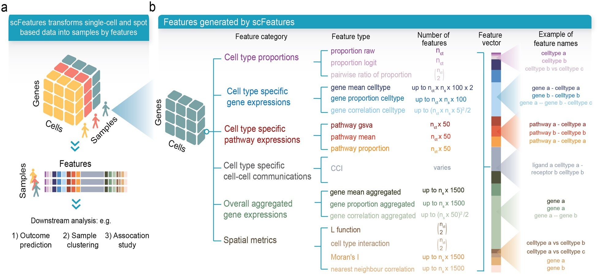

11 Finding associations between clinical variables and spatial features
Classification models play a central role in spatial omics by identifying features that distinguish between patient groups—advancing both mechanistic understanding and clinical stratification. These distinguishing features can capture a wide range of biological signals, from differences in tissue architecture and cell-cell interactions to variations in cell state or microenvironment composition. Depending on the aim, analyses may seek to explain the underlying biology of a condition or to build predictive models for clinical outcomes such as progression, metastasis, or therapeutic response.
However, due to biological heterogeneity, not all features are informative across all individuals. To address this, robust modelling frameworks must accommodate complex, subgroup-specific signals. This ensures that models not only perform well statistically but also yield biologically and clinically meaningful insights. ClassifyR provides such a framework, offering tools for feature selection, repeated cross-validation, performance evaluation, survival analysis, and integration across multiple data types. It is designed to rigorously assess which features predict outcomes, and for which subgroups, thereby enhancing both discovery and translational potential.
To build these models, it is essential to first summarise each tissue sample in terms of meaningful, comparable features. This is where the scFeatures package plays a complementary role. scFeatures generates a rich and diverse set of sample-level features that capture both spatial and non-spatial characteristics—including spatial organisation, cell-type proportions, expression variability, pathway activity, and more. Many of these features are derived from the spatial metrics computed earlier in this playbook. By creating a comprehensive feature set, scFeatures increases the likelihood of identifying biologically relevant patterns and supports multi-view modelling strategies.
In this section, we demonstrate how scFeatures can be used to generate interpretable, high-dimensional representations of spatial omics data, and how these can be combined with ClassifyR to construct and evaluate predictive models of patient outcome.
# set parameters
set.seed(51773)
# whether to use multiple cores (recommended)
use_mc = TRUE
is_windows = .Platform$OS.type == "windows"
if (use_mc) {
nCores = max(ceiling(parallel::detectCores() / 2), 1)
if (nCores == 1) {
BPPARAM = BiocParallel::SerialParam()
} else if (is_windows) {
BPPARAM = BiocParallel::SnowParam(workers = nCores, type = "SOCK")
} else {
BPPARAM = BiocParallel::MulticoreParam(workers = nCores)
}
} else {
BPPARAM = BiocParallel::SerialParam()
}
theme_set(theme_classic())
11.1 Introduction to ClassifyR
ClassifyR provides a structured pipeline for cross-validated classification. Classification is viewed in terms of four stages: data transformation, feature selection, classifier training, and prediction. The driver functions crossValidate and runTests implements varieties of cross-validation. They are:
- Permutation of the order of samples followed by k-fold cross-validation
- Repeated \(x\%\) test set cross-validation
- leave-k-out cross-validation
We will use the Keren 2018 dataset to perform two predictions: 1) predict the patient’s tumour type (compartmentalised or mixed) and 2) predict the patient’s survival outcome.
# load the Keren 2018 dataset
kerenSPE <- SpatialDatasets::spe_Keren_2018()
# remove any missing data in our outcome columns
kerenSPE = kerenSPE[, complete.cases(colData(kerenSPE)[, c("Censored", "Survival_days_capped*",
"tumour_type")])]
# load pre-computed data for efficiency
kontextMat <- readRDS("data/kontextMat.rds")
stateMat <- readRDS("data/stateMat.rds")
11.2 Introduction to scFeatures
scFeatures allows us to generate up to 17 sample-level metrics, including cell type proportions, cell type-specific marker expressions, cell type-specific pathway expressions, cell type-specific cell-cell communications, and overall aggregated marker expressions.

Here, we will use scFeatures to generate two sample-level metrics: proportion_raw, the proportion of cell types within each sample or image, and gene_mean_celltype, which captures cell type-specific marker expression.
11.3 Classification of patients by condition
We will use the Keren 2018 dataset to classify a patient’s tumour into one of two types: compartmentalised and mixed. First, we will filter out all cases which had cold tumours.
# filter out cold tumours
kerenSPE = kerenSPE[, colData(kerenSPE)$tumour_type != "cold"]
kerenSPE$tumour_type = droplevels(kerenSPE$tumour_type)
levels(kerenSPE$tumour_type) = c("compartmentalised", "mixed")
kontextMat = kontextMat[rownames(kontextMat) %in% unique(kerenSPE$imageID), ]
stateMat = stateMat[rownames(stateMat) %in% unique(kerenSPE$imageID), ]We will build a list of feature matrices using the features we’ve generated in the previous chapters, including the two metrics generated through scFeatures:
- Co-localisation between pairs of cell types using the L-function (
spicyR) - Cell type co-localisation with respect to a parent population using
Kontextual(Statial) - Regions of co-localisation, or spatial domains (
lisaClust) - Marker means in each cell type (
Statial) - Proximity-associated changes in marker expression using SpatioMark (
Statial) - Cell type proportions (
scFeatures) - Cell type-specific marker expression (
scFeatures)
# pre-generated spatial metrics
data <- list()
# Cell localisation (spicyR)
data[["spicyR"]] <- getPairwise(kerenSPE,
BPPARAM = BPPARAM) |> as.data.frame()Warning: The `BPPARAM` argument of `getPairwise()` is deprecated as of spicyR 1.18.0.
ℹ Please use the `cores` argument instead.
ℹ The deprecated feature was likely used in the spicyR package.
Please report the issue at <https://github.com/SydneyBioX/spicyR/issues>.# Cell localisation with respect to a parent (Kontextual)
data[["Kontextual"]] <- kontextMat
# Spatial Domains (lisaClust)
data[["lisaClust"]] <- getProp(lisaClust(kerenSPE, k = 5,
BPPARAM = BPPARAM), "region")Warning: The `BPPARAM` argument of `lisaClust()` is deprecated as of lisaClust 1.14.4.
ℹ Please use the `cores` argument instead.
ℹ The deprecated feature was likely used in the lisaClust package.
Please report the issue at
<https://github.com/ellispatrick/lisaClust/issues>.Generating local L-curves.# Marker means in each cell type (Statial)
data[["cellTypeMarkerMeans"]] <- getMarkerMeans(kerenSPE, imageID = "imageID",
cellType = "cellType",
region = "cellType")
# Proximity-associated changes in marker expression (SpatioMark)
data[["SpatioMark"]] <- stateMatWe will now use scFeatures to generate our two selected features. Below, we use the scFeatures function and specify type = "spatial_p" to indicate we are using spatial proteomics data.
# generate assay matrix and add spatial features
keren_mat = assay(kerenSPE) |> as.matrix()
# generate spatial coords vectors
x = spatialCoords(kerenSPE)[, 1] |> as.vector()
y = spatialCoords(kerenSPE)[, 2] |> as.vector()
# scFeatures
scfeatures_result <- scFeatures(data = keren_mat,
sample = kerenSPE$imageID,
celltype = kerenSPE$cellType,
spatialCoords = list(x, y),
feature_types = c("proportion_raw", "gene_mean_celltype") ,
type = "spatial_p",
ncores = nCores,
species = "Homo sapiens")generating proportion raw featuresWarning: spatial_p does not currently support parallel computationgenerating gene mean celltype features# add to our list of feature matrices
data[["proportions"]] = scfeatures_result$proportion_raw
data[["cellTypeMarkerMeans"]] = scfeatures_result$gene_mean_celltypeWe will then generate a factor vector of our outcome variable.
# outcome vector
outcome = kerenSPE$tumour_type[!duplicated(kerenSPE$imageID)]
names(outcome) = kerenSPE$imageID[!duplicated(kerenSPE$imageID)]
head(outcome, 5) 1 2 3 4
mixed mixed compartmentalised compartmentalised
5
compartmentalised
Levels: compartmentalised mixedClassifyR provides a convenient function, crossValidate, to build and test models. crossValidate must be supplied with measurements, a simple tabular data container or a list-like structure of such related tabular data on common samples. It can be in the form of a matrix, data.frame, DataFrame, MultiAssayExperiment or a list of data.frames.
crossValidate must also be supplied with outcome, which represents the prediction to be made. outcome can be either a factor containing the class labels for each observation, or a character of length 1 that matches a column name in measurements which holds the classes. If a character is provided, crossValidate will automatically remove the classes before training.
By default, crossValidate will build and train a random forest. Alternative classifiers can be specified using the classifier argument. To view all available feature selection and classification approaches, use the available function.
# perform 50 repeats of 5-fold cross-validation
cv = crossValidate(measurements = data,
outcome = outcome,
nFolds = 5,
nRepeats = 50,
nCores = nCores)We can use performancePlot to visualise performance metrics for all our features. Here, we visualise the AUC for each of the seven feature matrices we tested. Additional performance metrics can be specified in the metric argument.
performancePlot(
cv,
metric = "AUC",
characteristicsList = list(x = "Assay Name"),
orderingList = list("Assay Name" = c("spicyR", "lisaClust", "Kontextual", "SpatioMark", "proportions", "cellTypeMarkerMeans"))) 
From the graph, both lisaClust and proportions appear to capture information which is predictive of the tumour type of patients.
11.4 Classification of patients by survival
crossValidate also has the capacity to test classification performance for a survival outcome. In this case, outcome must be a Surv object of the same length as the number of samples in the feature matrix and should contain information about the time and censoring of the samples. Alternatively, we can specify outcome to be a character of length 2 or 3 that each match a column name in a data frame which holds information about the time and censoring of the samples. The time-to-event columns will automatically be removed before training is done.
We will first add a survival column to the kerenSPE object.
# create a Surv object named "survival"
kerenSPE$event = 1 - kerenSPE$Censored
kerenSPE$survival = Surv(kerenSPE$`Survival_days_capped*`, kerenSPE$event)
# outcome vector
surv_outcome = kerenSPE$survival[!duplicated(kerenSPE$imageID)]
names(surv_outcome) = kerenSPE$imageID[!duplicated(kerenSPE$imageID)]
surv_outcome 1 2 3 4 5 6 7 8 9 10 11 12 13
2612 745 3130+ 2523+ 1683+ 2275+ 584 946 3767+ 3822+ 3774+ 4353+ 1072
14 16 17 18 20 21 23 27 28 29 31 32 33
4145+ 530 2842 5063+ 4761+ 635 91 3658 3767+ 1319 1009 1568+ 1738+
34 35 36 37 39 40 41
2832+ 2759+ 3063+ 2853+ 2096+ 3573 3355+ We can then run crossValidate and specify the outcome to be surv_outcome, and use performancePlot to visualise the performance of the cross-validation. Since we are performing survival analysis, we will specify metric = "C-index".
# perform 50 repeats of 5-fold cross-validation
surv_cv = crossValidate(measurements = data,
outcome = surv_outcome,
nFolds = 5,
nRepeats = 50,
nCores = nCores)
performancePlot(surv_cv,
metric = "C-index",
characteristicsList = list(x = "Assay Name"),
orderingList = list("Assay Name" = c("spicyR", "lisaClust", "Kontextual", "SpatioMark", "proportions", "cellTypeMarkerMeans"))
)
From the graph, we can see that lisaClust appears to capture information that is predictive of survival outcomes comparatively well.
11.5 Easy and hard to classify patients
The samplesMetricMap function allows visual comparison of sample-wise error rates or accuracy measures from the cross-validation process, helping to identify which samples are consistently well-classified and which are not.
11.5.1 Predicting tumour type
samplesMetricMap(cv,
classColours = c("#3F48CC", "#880015"),
metricColours = list(c("#FFFFFF", "#CFD1F2", "#9FA3E5", "#6F75D8", "#3F48CC"),
c("#FFFFFF", "#E1BFC4", "#C37F8A", "#A53F4F", "#880015")))
TableGrob (2 x 1) "arrange": 2 grobs
z cells name grob
1 1 (2-2,1-1) arrange gtable[layout]
2 2 (1-1,1-1) arrange text[GRID.text.399]This plot highlights samples that are challenging to classify, providing an opportunity to investigate sources of ambiguity. For instance, patients 36 and 13 were particularly difficult to classify. These cases might benefit from additional clinical review or closer inspection of spatial and molecular features not captured in the current feature set. Overall, both cell type proportions (proportion_raw) and spatial domains (lisaClust) performed well for tumour type classification. Interestingly, compartmentalised tumours were generally easier to classify than mixed tumours, suggesting a stronger or more consistent spatial signal.
11.5.2 Predicting survival outcomes
We can also use sampleMetricMap to identify samples that were difficult to classify with respect to a survival outcome.
samplesMetricMap(surv_cv)
TableGrob (2 x 1) "arrange": 2 grobs
z cells name grob
1 1 (2-2,1-1) arrange gtable[layout]
2 2 (1-1,1-1) arrange text[GRID.text.551]In the survival classification task, patient 35 stood out as a difficult case, while samples 31 through 20 were better classified, particularly by lisaClust-derived features. This suggests that spatial domain organisation may carry prognostic value in this dataset.
Samples identified as hard to classify offer valuable opportunities for further exploration:
- Feature enrichment: Re-examine these samples to see if they possess atypical spatial structures or marker expression profiles that were not well captured by the current feature set. Incorporating additional spatial or morphological features () may improve model sensitivity.
Biological subgrouping: Difficult-to-classify samples may represent intermediate or mixed phenotypes. Cluster these cases separately to explore whether they define a distinct subgroup or transition state, especially relevant in diseases with high heterogeneity.
External validation: If another cohort is available, assess whether the same samples or subgroups remain difficult to classify, which may help distinguish model-specific from biologically meaningful ambiguity.
Manual annotation: Engage domain experts to manually review spatial images of ambiguous cases for insights into unmodeled variation, such as rare cell types, artefacts, or unexpected tissue features.
Integrative modelling: Combine spatial features with other data modalities (e.g., genomics, transcriptomics, pathology annotations) to test whether multi-modal integration resolves classification uncertainty in these samples.
DataFrame(), outcome, crossValParams, SVMparams) ``` ::: The index of chosen of the parameters, as well as all combinations of parameters and their associated performance metric, are stored for every validation, and can be accessed with the `tunedParameters` function. ::: {.cell} ```{.r .cell-code} tunedParameters(SVMresults)[1:5] ``` ::: -->In this way, we can predict clinical outcomes and identify samples that are hard to classify.
In subsequent sections, we will demonstrate how the end-to-end workflow can be applied to a single dataset in the form of case studies.
12 sessionInfo
R version 4.5.0 (2025-04-11)
Platform: aarch64-apple-darwin20
Running under: macOS Sonoma 14.4.1
Matrix products: default
BLAS: /Library/Frameworks/R.framework/Versions/4.5-arm64/Resources/lib/libRblas.0.dylib
LAPACK: /Library/Frameworks/R.framework/Versions/4.5-arm64/Resources/lib/libRlapack.dylib; LAPACK version 3.12.1
locale:
[1] en_US.UTF-8/en_US.UTF-8/en_US.UTF-8/C/en_US.UTF-8/en_US.UTF-8
time zone: Australia/Sydney
tzcode source: internal
attached base packages:
[1] stats4 stats graphics grDevices utils datasets methods
[8] base
other attached packages:
[1] SpatialDatasets_1.6.3 SpatialExperiment_1.18.1
[3] SingleCellExperiment_1.30.1 ExperimentHub_2.16.0
[5] AnnotationHub_3.16.0 BiocFileCache_2.16.0
[7] dbplyr_2.5.0 scFeatures_1.8.0
[9] ggplot2_3.5.2 spicyR_1.20.1
[11] Statial_1.10.0 lisaClust_1.16.0
[13] ClassifyR_3.12.0 survival_3.8-3
[15] BiocParallel_1.42.0 MultiAssayExperiment_1.34.0
[17] SummarizedExperiment_1.38.1 Biobase_2.68.0
[19] GenomicRanges_1.60.0 GenomeInfoDb_1.44.0
[21] IRanges_2.42.0 MatrixGenerics_1.20.0
[23] matrixStats_1.5.0 S4Vectors_0.46.0
[25] BiocGenerics_0.54.0 generics_0.1.4
loaded via a namespace (and not attached):
[1] GSVA_2.2.0 ProtGenerics_1.40.0
[3] spatstat.sparse_3.1-0 bitops_1.0-9
[5] httr_1.4.7 RColorBrewer_1.1-3
[7] numDeriv_2016.8-1.1 EnsDb.Hsapiens.v79_2.99.0
[9] tools_4.5.0 doRNG_1.8.6.2
[11] backports_1.5.0 R6_2.6.1
[13] HDF5Array_1.36.0 lazyeval_0.2.2
[15] mgcv_1.9-3 rhdf5filters_1.20.0
[17] withr_3.0.2 gridExtra_2.3
[19] coxme_2.2-22 cli_3.6.5
[21] spatstat.explore_3.4-3 labeling_0.4.3
[23] spatstat.data_3.1-6 genefilter_1.90.0
[25] SingleCellSignalR_1.20.0 Rsamtools_2.24.0
[27] ggupset_0.4.1 R.utils_2.13.0
[29] dichromat_2.0-0.1 limma_3.64.1
[31] rstudioapi_0.17.1 RSQLite_2.3.11
[33] shape_1.4.6.1 BiocIO_1.18.0
[35] gtools_3.9.5 spatstat.random_3.4-1
[37] car_3.1-3 dplyr_1.1.4
[39] scam_1.2-19 Matrix_1.7-3
[41] abind_1.4-8 R.methodsS3_1.8.2
[43] lifecycle_1.0.4 yaml_2.3.10
[45] edgeR_4.6.2 carData_3.0-5
[47] rhdf5_2.52.0 gplots_3.2.0
[49] SparseArray_1.8.0 Rtsne_0.17
[51] grid_4.5.0 blob_1.2.4
[53] dqrng_0.4.1 crayon_1.5.3
[55] bdsmatrix_1.3-7 lattice_0.22-6
[57] msigdbr_24.1.0 beachmat_2.24.0
[59] GenomicFeatures_1.60.0 annotate_1.86.0
[61] KEGGREST_1.48.0 magick_2.8.5
[63] pillar_1.10.2 knitr_1.50
[65] dcanr_1.24.0 metapod_1.16.0
[67] rjson_0.2.23 boot_1.3-31
[69] codetools_0.2-20 glue_1.8.0
[71] spatstat.univar_3.1-3 data.table_1.17.4
[73] vctrs_0.6.5 png_0.1-8
[75] Rdpack_2.6.4 gtable_0.3.6
[77] assertthat_0.2.1 cachem_1.1.0
[79] xfun_0.52 mime_0.13
[81] rbibutils_2.3 S4Arrays_1.8.0
[83] reformulas_0.4.1 pheatmap_1.0.12
[85] iterators_1.0.14 statmod_1.5.0
[87] bluster_1.18.0 nlme_3.1-168
[89] bit64_4.6.0-1 filelock_1.0.3
[91] irlba_2.3.5.1 KernSmooth_2.23-26
[93] colorspace_2.1-1 DBI_1.2.3
[95] tidyselect_1.2.1 proxyC_0.5.2
[97] bit_4.6.0 compiler_4.5.0
[99] curl_6.2.3 AUCell_1.30.1
[101] graph_1.86.0 BiocNeighbors_2.2.0
[103] h5mread_1.0.1 DelayedArray_0.34.1
[105] plotly_4.10.4 rtracklayer_1.68.0
[107] scales_1.4.0 caTools_1.18.3
[109] rappdirs_0.3.3 stringr_1.5.1
[111] digest_0.6.37 goftest_1.2-3
[113] spatstat.utils_3.1-4 minqa_1.2.8
[115] rmarkdown_2.29 XVector_0.48.0
[117] htmltools_0.5.8.1 pkgconfig_2.0.3
[119] lme4_1.1-37 sparseMatrixStats_1.20.0
[121] fastmap_1.2.0 ensembldb_2.32.0
[123] rlang_1.1.6 GlobalOptions_0.1.2
[125] htmlwidgets_1.6.4 ggthemes_5.1.0
[127] UCSC.utils_1.4.0 DelayedMatrixStats_1.30.0
[129] ggh4x_0.3.0 farver_2.1.2
[131] jsonlite_2.0.0 R.oo_1.27.1
[133] BiocSingular_1.24.0 RCurl_1.98-1.17
[135] magrittr_2.0.3 Formula_1.2-5
[137] scuttle_1.18.0 GenomeInfoDbData_1.2.14
[139] Rhdf5lib_1.30.0 Rcpp_1.0.14
[141] babelgene_22.9 ape_5.8-1
[143] ggnewscale_0.5.1 stringi_1.8.7
[145] MASS_7.3-65 plyr_1.8.9
[147] parallel_4.5.0 deldir_2.0-4
[149] Biostrings_2.76.0 splines_4.5.0
[151] tensor_1.5 multtest_2.64.0
[153] circlize_0.4.16 locfit_1.5-9.12
[155] igraph_2.1.4 ggpubr_0.6.0
[157] ranger_0.17.0 spatstat.geom_3.4-1
[159] ggsignif_0.6.4 rngtools_1.5.2
[161] reshape2_1.4.4 ScaledMatrix_1.16.0
[163] BiocVersion_3.21.1 XML_3.99-0.18
[165] evaluate_1.0.3 scran_1.36.0
[167] BiocManager_1.30.25 nloptr_2.2.1
[169] foreach_1.5.2 tweenr_2.0.3
[171] EnsDb.Mmusculus.v79_2.99.0 tidyr_1.3.1
[173] purrr_1.0.4 polyclip_1.10-7
[175] BiocBaseUtils_1.10.0 ggforce_0.4.2
[177] rsvd_1.0.5 broom_1.0.8
[179] xtable_1.8-4 restfulr_0.0.15
[181] AnnotationFilter_1.32.0 rstatix_0.7.2
[183] viridisLite_0.4.2 class_7.3-23
[185] tibble_3.2.1 lmerTest_3.1-3
[187] memoise_2.0.1 AnnotationDbi_1.70.0
[189] GenomicAlignments_1.44.0 cluster_2.1.8.1
[191] concaveman_1.1.0 GSEABase_1.70.0